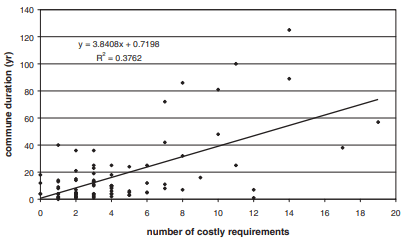
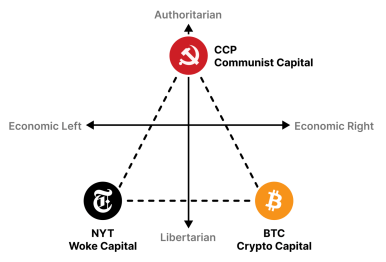
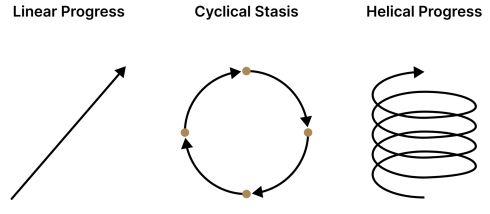
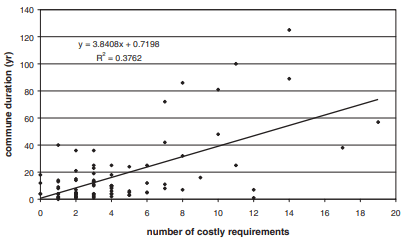
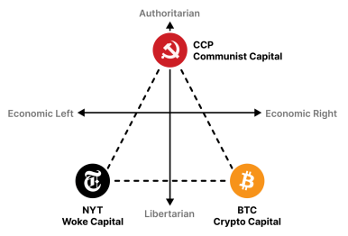
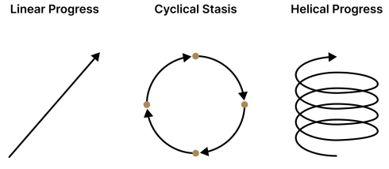

What do I think about network states?
2022 Jul 13
See all posts
What do I think about network states?
On July 4, Balaji Srinivasan released the first version of his long-awaited new book describing his vision for "network states": communities organized around a particular vision of how to run their own society that start off as online clubs, but then build up more and more of a presence over time and eventually become large enough to seek political autonomy or even diplomatic recognition.
Network states can be viewed as an attempt at an ideological successor to libertarianism: Balaji repeatedly praises The Sovereign Individual (see my mini-review here) as important reading and inspiration, but also departs from its thinking in key ways, centering in his new work many non-individualistic and non-monetary aspects of social relations like morals and community. Network states can also be viewed as an attempt to sketch out a possible broader political narrative for the crypto space. Rather than staying in their own corner of the internet disconnected from the wider world, blockchains could serve as a centerpiece for a new way of organizing large chunks of human society.
These are high promises. Can network states live up to them? Do network states actually provide enough benefits to be worth getting excited about? Regardless of the merits of network states, does it actually make sense to tie the idea together with blockchains and cryptocurrency? And on the other hand, is there anything crucially important that this vision of the world misses? This post represents my attempt to try to understand these questions.
Table of contents
What is a network state?
Balaji helpfully gives multiple short definitions of what a network state is. First, his definition in one sentence:
A network state is a highly aligned online community with a capacity for collective action that crowdfunds territory around the world and eventually gains diplomatic recognition from pre-existing states.
This so far seems uncontroversial. Create a new internet community online, once it grows big enough materialize it offline, and eventually try to negotiate for some kind of status. Someone of almost any political ideology could find some form of network state under this definition that they could get behind. But now, we get to his definition in a longer sentence:
A network state is a social network with a moral innovation, a sense of national consciousness, a recognized founder, a capacity for collective action, an in-person level of civility, an integrated cryptocurrency, a consensual government limited by a social smart contract, an archipelago of crowdfunded physical territories, a virtual capital, and an on-chain census that proves a large enough population, income, and real-estate footprint to attain a measure of diplomatic recognition.
Here, the concept starts to get opinionated: we're not just talking about the general concept of online communities that have collective agency and eventually try to materialize on land, we're talking about a specific Balajian vision of what network states should look like. It's completely possible to support network states in general, but have disagreements with the Balajian view of what properties network states should have. If you're not already a "crypto convert", it's hard to see why an "integrated cryptocurrency" is such a fundamental part of the network state concept, for example - though Balaji does later on in the book defend his choices.
Finally, Balaji expands on this conception of a Balajian network state in longer-form, first in "a thousand words" (apparently, Balajian network states use base 8, as the actual word count is exactly \(512 = 8^3\)) and then an essay, and at the very end of the book a whole chapter.

And, of course, an image.
One key point that Balaji stresses across many chapters and pages is the unavoidable moral ingredient required for any successful new community. As Balaji writes:
The quick answer comes from Paul Johnson at the 11:00 mark of this talk, where he notes that early America's religious colonies succeeded at a higher rate than its for-profit colonies, because the former had a purpose. The slightly longer answer is that in a startup society, you're not asking people to buy a product (which is an economic, individualistic pitch) but to join a community (which is a cultural, collective pitch).
The commitment paradox of religious communes is key here: counterintuitively, it's the religious communes that demand the most of their members that are the most long-lasting.

This is where Balajism explicitly diverges from the more traditional neoliberal-capitalist ideal of the defanged, apolitical and passion-free consumerist "last man". Unlike the strawman libertarian, Balaji does not believe that everything can "merely be a consumer product". Rather, he stresses greatly the importance of social norms for cohesion, and a literally religious attachment to the values that make a particular network state distinct from the world outside. As Balaji says in this podcast at 18:20, most current libertarian attempts at micronations are like "Zionism without Judaism", and this is a key part of why they fail.
This recognition is not a new one. Indeed, it's at the core of Antonio Garcia Martinez's criticism of Balaji's earlier sovereign-individual ideas (see this podcast at ~27:00), praising the tenacity of Cuban exiles in Miami who "perhaps irrationally, said this is our new homeland, this is our last stand". And in Fukuyama's The End of History:
This city, like any city, has foreign enemies and needs to be defended from outside attack. It therefore needs a class of guardians who are courageous and public-spirited, who are willing to sacrifice their material desires and wants for the sake of the common good. Socrates does not believe that courage and public-spiritedness can arise out of a calculation of enlightened self-interest. Rather, they must be rooted in thymos, in the just pride of the guardian class in themselves and in their own city, and their potentially irrational anger against those who threaten it.
Balaji's argument in The Network State, as I am interpreting it, is as follows. While we do need political collectives bound not just by economic interest but also by moral force, we don't need to stick with the specific political collectives we have today, which are highly flawed and increasingly unrepresentative of people's values. Rather, we can, and should, create new and better collectives - and his seven-step program tells us how.
So what kinds of network states could we build?
Balaji outlines a few ideas for network states, which I will condense into two key directions: lifestyle immersion and pro-tech regulatory innovation.
Balaji's go-to example for lifestyle immersion is a network state organized around health:
Next, let's do an example which requires a network archipelago (with a physical footprint) but not a full network state (with diplomatic recognition). This is Keto Kosher, the sugar-free society.
Start with a history of the horrible USDA Food Pyramid, the grain-heavy monstrosity that gave cover to the corporate sugarification of the globe and the obesity epidemic. ... Organize a community online that crowdfunds properties around the world, like apartment buildings and gyms, and perhaps eventually even culdesacs and small towns. You might take an extreme sugar teeotaler approach, literally banning processed foods and sugar at the border, thereby implementing a kind of "Keto Kosher".
You can imagine variants of this startup society that are like "Carnivory Communities" or "Paleo People". These would be competing startup societies in the same broad area, iterations on a theme. If successful, such a society might not stop at sugar. It could get into setting cultural defaults for fitness and exercise. Or perhaps it could bulk purchase continuous glucose meters for all members, or orders of metformin.
This, strictly speaking, does not require any diplomatic recognition or even political autonomy - though perhaps, in the longer-term future, such enclaves could negotiate for lower health insurance fees and medicare taxes for their members. What does require autonomy? Well, how about a free zone for medical innovation?
Now let's do a more difficult example, which will require a full network state with diplomatic recognition. This is the medical sovereignty zone, the FDA-free society.
You begin your startup society with Henninger's history of FDA-caused drug lag and Tabarrok's history of FDA interference with so-called "off label" prescription. You point out how many millions were killed by its policies, hand out t-shirts like ACT-UP did, show Dallas Buyers Club to all prospective residents, and make clear to all new members why your cause of medical sovereignty is righteous ...
For the case of doing it outside the US, your startup society would ride behind, say, the support of the Malta's FDA for a new biomedical regime. For the case of doing it within the US, you'd need a governor who'd declare a sanctuary state for biomedicine. That is, just like a sanctuary city declares that it won't enforce federal immigration law, a sanctuary state for biomedicine would not enforce FDA writ.
One can think up of many more examples for both categories. One could have a zone where it's okay to walk around naked, both securing your legal right to do so and helping you feel comfortable by creating an environment where many other people are naked too. Alternatively, you could have a zone where everyone can only wear basic plain-colored clothing, to discourage what's perceived as a zero-sum status competition of expending huge effort to look better than everyone else. One could have an intentional community zone for cryptocurrency users, requiring every store to accept it and demanding an NFT to get in the zone at all. Or one could build an enclave that legalizes radical experiments in transit and drone delivery, accepting higher risks to personal safety in exchange for the privilege of participating in a technological frontier that will hopefully set examples for the world as a whole.
What is common about all of these examples is the value of having a physical region, at least of a few hectares, where the network state's unique rules are enforced. Sure, you could individually insist on only eating at healthy restaurants, and research each restaurant carefully before you go there. But it's just so much easier to have a defined plot of land where you have an assurance that anywhere you go within that plot of land will meet your standards. Of course, you could lobby your local government to tighten health and safety regulations. But if you do that, you risk friction with people who have radically different preferences on tradeoffs, and you risk shutting poor people out of the economy. A network state offers a moderate approach.
What is Balaji's megapolitical case for network states?
One of the curious features of the book that a reader will notice almost immediately is that it sometimes feels like two books in one: sometimes, it's a book about the concept of network states, and at other times it's an exposition of Balaji's grand megapolitical theory.
Balaji's grand megapolitical theory is pretty out-there and fun in a bunch of ways. Near the beginning of the book, he entices readers with tidbits like... ok fine, I'll just quote:
- Germany sent Vladimir Lenin into Russia, potentially as part of a strategy to destabilize their then-rival in war. Antony Sutton's books document how some Wall Street bankers apparently funded the Russian Revolution (and how other Wall Street bankers funded the Nazis years later). Leon Trotsky spent time in New York prior to the revolution, and propagandistic reporting from Americans like John Reed aided Lenin and Trotsky in their revolution. Indeed, Reed was so useful to the Soviets — and so misleading as to the nature of the revolution — that he was buried at the base of the Kremlin Wall. Surprise: the Russian Revolution wasn't done wholly by Russians, but had significant foreign involvement from Germans and Americans.
- The Ochs-Sulzberger family, which owns The New York Times Company, owned slaves but didn't report that fact in their 1619 coverage.
- New York Times correspondent Walter Duranty won a Pulitzer Prize for helping the Soviet Union starve Ukraine into submission, 90 years before the Times
You can find a bunch more juicy examples in the chapter titled, appropriately, "If the News is Fake, Imagine History". These examples seem haphazard, and indeed, to some extent they are so intentionally: the goal is first and foremost to shock the reader out of their existing world model so they can start downloading Balaji's own.
But pretty soon, Balaji's examples do start to point to some particular themes: a deep dislike of the "woke" US left, exemplified by the New York Times, a combination of strong discomfort with the Chinese Communist Party's authoritarianism with an understanding of why the CCP often justifiably fears the United States, and an appreciation of the love of freedom of the US right (exemplified by Bitcoin maximalists) combined with a dislike of their hostility toward cooperation and order.
Next, we get Balaji's overview of the political realignments in recent history, and finally we get to his core model of politics in the present day: NYT, CCP, BTC.

Team NYT basically runs the US, and its total lack of competence means that the US is collapsing. Team BTC (meaning, both actual Bitcoin maximalists and US rightists in general) has some positive values, but their outright hostility to collective action and order means that they are incapable of building anything. Team CCP can build, but they are building a dystopian surveillance state that much of the world would not want to live in. And all three teams are waaay too nationalist: they view things from the perspective of their own country, and ignore or exploit everyone else. Even when the teams are internationalist in theory, their specific ways of interpreting their values make them unpalatable outside of a small part of the world.
Network states, in Balaji's view, are a "de-centralized center" that could create a better alternative. They combine the love of freedom of team BTC with the moral energy of team NYT and the organization of team CCP, and give us the best benefits of all three (plus a level of international appeal greater than any of the three) and avoid the worst parts.
This is Balajian megapolitics in a nutshell. It is not trying to justify network states using some abstract theory (eg. some Dunbar's number or concentrated-incentive argument that the optimal size of a political body is actually in the low tens of thousands). Rather, it is an argument that situates network states as a response to the particular political situation of the world at its current place and time.

Balaji's helical theory of history: yes, there are cycles, but there is also ongoing progress. Right now, we're at the part of the cycle where we need to help the sclerotic old order die, but also seed a new and better one.
Do you have to agree with Balaji's megapolitics to like network states?
Many aspects of Balajian megapolitics will not be convincing to many readers. If you believe that "wokeness" is an important movement that protects the vulnerable, you may not appreciate the almost off-handed dismissal that it is basically just a mask for a professional elite's will-to-power. If you are worried about the plight of smaller countries such as Ukraine who are threatened by aggressive neighbors and desperately need outside support, you will not be convinced by Balaji's plea that "it may instead be best for countries to rearm, and take on their own defense".
I do think that you can support network states while disagreeing with some of Balaji's reasoning for them (and vice versa). But first, I should explain why I think Balaji feels that his view of the problem and his view of the solution are connected. Balaji has been passionate about roughly the same problem for a long time; you can see a similar narrative outline of defeating US institutional sclerosis through a technological and exit-driven approach in his speech on "the ultimate exit" from 2013. Network states are the latest iteration of his proposed solution.
There are a few reasons why talking about the problem is important:
- To show that network states are the only way to protect freedom and capitalism, one must show why the US cannot. If the US, or the "democratic liberal order", is just fine, then there is no need for alternatives; we should just double down on global coordination and rule of law. But if the US is in an irreversible decline, and its rivals are ascending, then things look quite different. Network states can "maintain liberal values in an illiberal world"; hegemony thinking that assumes "the good guys are in charge" cannot.
- Many of Balaji's intended readers are not in the US, and a world of network states would inherently be globally distributed - and that includes lots of people who are suspicious of America. Balaji himself is Indian, and has a large Indian fan base. Many people in India, and elsewhere, view the US not as a "guardian of the liberal world order", but as something much more hypocritical at best and sinister at worst. Balaji wants to make it clear that you do not have to be pro-American to be a liberal (or at least a Balaji-liberal).
- Many parts of US left-leaning media are increasingly hostile to both cryptocurrency and the tech sector. Balaji expects that the "authoritarian left" parts of "team NYT" will be hostile to network states, and he explains this by pointing out that the media are not angels and their attacks are often self-interested.
But this is not the only way of looking at the broader picture. What if you do believe in the importance of role of social justice values, the New York Times, or America? What if you value governance innovation, but have more moderate views on politics? Then, there are two ways you could look at the issue:
- Network states as a synergistic strategy, or at least as a backup. Anything that happens in US politics in terms of improving equality, for example, only benefits the ~4% of the world's population that lives in the Untied States. The First Amendment does not apply outside US borders. The governance of many wealthy countries is sclerotic, and we do need some way to try more governance innovation. Network states could fill in the gaps. Countries like the United States could host network states that attract people from all over the world. Successful network states could even serve as a policy model for countries to adopt. Alternatively, what if the Republicans win and secure a decades-long majority in 2024, or the United States breaks down? You want there to be an alternative.
- Exit to network states as a distraction, or even a threat. If everyone's first instinct when faced with a large problem within their country is to exit to an enclave elsewhere, there will be no one left to protect and maintain the countries themselves. Global infrastructure that ultimately network states depend on will suffer.
Both perspectives are compatible with a lot of disagreement with Balajian megapolitics. Hence, to argue for or against Balajian network states, we will ultimately have to talk about network states. My own view is friendly to network states, though with a lot of caveats and different ideas about how network states could work.
What does cryptocurrency have to do with network states?
There are two kinds of alignment here: there is the spiritual alignment, the idea that "Bitcoin becomes the flag of technology", and there is the practical alignment, the specific ways in which network states could use blockchains and cryptographic tokens. In general, I agree with both of these arguments - though I think Balaji's book could do much more to spell them out more explicitly.
The spiritual alignment
Cryptocurrency in 2022 is a key standard-bearer for internationalist liberal values that are difficult to find in any other social force that still stands strong today. Blockchains and cryptocurrencies are inherently global. Most Ethereum developers are outside the US, living in far-flung places like Europe, Taiwan and Australia. NFTs have given unique opportunities to artists in Africa and elsewhere in the Global South. Argentinians punch above their weight in projects like Proof of Humanity, Kleros and Nomic Labs.
Blockchain communities continue to stand for openness, freedom, censorship resistance and credible neutrality, at a time where many geopolitical actors are increasingly only serving their own interests. This enhances their international appeal further: you don't have to love US hegemony to love blockchains and the values that they stand for. And this all makes blockchains an ideal spiritual companion for the network state vision that Balaji wants to see.
The practical alignment
But spiritual alignment means little without practical use value for blockchains to go along with it. Balaji gives plenty of blockchain use cases. One of Balaji's favorite concepts is the idea of the blockchain as a "ledger of record": people can timestamp events on-chain, creating a global provable log of humanity's "microhistory". He continues with other examples:
But how does this all relate to network states? I could go into specific examples in the vein of crypto cities: issuing tokens, issuing CityDAO-style citizen NFTs, combining blockchains with zero-knowledge cryptography to do secure privacy-preserving voting, and a lot more. Blockchains are the Lego of crypto-finance and crypto-governance: they are a very effective tool for implementing transparent in-protocol rules to govern common resources, assets and incentives.
But we also need to go a level deeper. Blockchains and network states have the shared property that they are both trying to "create a new root". A corporation is not a root: if there is a dispute inside a corporation, it ultimately gets resolved by a national court system. Blockchains and network states, on the other hand, are trying to be new roots. This does not mean require some absolute "na na no one can catch me" ideal of sovereignty that is perhaps only truly accessible to the ~5 countries that have highly self-sufficient national economies and/or nuclear weapons. Individual blockchain participants are of course vulnerable to national regulation, and enclaves of network states even more so. But blockchains are the only infrastructure system that at least attempts to do ultimate dispute resolution at the non-state level (either through on-chain smart contract logic or through the freedom to fork). This makes them an ideal base infrastructure for network states.
What aspects of Balaji's vision do I like?
Given that a purist "private property rights only" libertarianism inevitably runs into large problems like its inability to fund public goods, any successful pro-freedom program in the 21st century has to be a hybrid containing at least one Big Compromise Idea that solves at least 80% of the problems, so that independent individual initiative can take care of the rest. This could be some stringent measures against economic power and wealth concentration (maybe charge annual Harberger taxes on everything), it could be an 85% Georgist land tax, it could be a UBI, it could be mandating that sufficiently large companies become democratic internally, or one of any other proposals. Not all of these work, but you need something that drastic to have any shot at all.
Generally, I am used to the Big Compromise Idea being a leftist one: some form of equality and democracy. Balaji, on the other hand, has Big Compromise Ideas that feel more rightist: local communities with shared values, loyalty, religion, physical environments structured to encourage personal discipline ("keto kosher") and hard work. These values are implemented in a very libertarian and tech-forward way, organizing not around land, history, ethnicity and country, but around the cloud and personal choice, but they are rightist values nonetheless. This style of thinking is foreign to me, but I find it fascinating, and important. Stereotypical "wealthy white liberals" ignore this at their peril: these more "traditional" values are actually quite popular even among some ethnic minorities in the United States, and even more so in places like Africa and India, which is exactly where Balaji is trying to build up his base.
But what about this particular baizuo that's currently writing this review? Do network states actually interest me?
The "Keto Kosher" health-focused lifestyle immersion network state is certainly one that I would want to live in. Sure, I could just spend time in cities with lots of healthy stuff that I can seek out intentionally, but a concentrated physical environment makes it so much easier. Even the motivational aspect of being around other people who share a similar goal sounds very appealing.
But the truly interesting stuff is the governance innovation: using network states to organize in ways that would actually not be possible under existing regulations. There are three ways that you can interpret the underlying goal here:
- Creating new regulatory environments that let their residents have different priorities from the priorities preferred by the mainstream: for example, the "anyone can walk around naked" zone, or a zone that implements different tradeoffs between safety and convenience, or a zone that legalizes more psychoactive substances.
- Creating new regulatory institutions that might be more efficient at serving the same priorities as the status quo. For example, instead of improving environmental friendliness by regulating specific behaviors, you could just have a Pigovian tax. Instead of requiring licenses and regulatory pre-approval for many actions, you could require mandatory liability insurance. You could use quadratic voting for governance and quadratic funding to fund local public goods.
- Pushing against regulatory conservatism in general, by increasing the chance that there's some jurisdiction that will let you do any particular thing. Institutionalized bioethics, for example, is a notoriously conservative enterprise, where 20 people dead in a medical experiment gone wrong is a tragedy, but 200000 people dead from life-saving medicines and vaccines not being approved quickly enough is a statistic. Allowing people to opt into network states that accept higher levels of risk could be a successful strategy for pushing against this.
In general, I see value in all three. A large-scale institutionalization of [1] could make the word simultaneously more free while making people comfortable with higher levels of restriction of certain things, because they know that if they want to do something disallowed there are other zones they could go to do it. More generally, I think there is an important idea hidden in [1]: while the "social technology" community has come up with many good ideas around better governance, and many good ideas around better public discussion, there is a missing emphasis on better social technology for sorting. We don't just want to take existing maps of social connections as given and find better ways to come to consensus within them. We also want to reform the webs of social connections themselves, and put people closer to other people that are more compatible with them to better allow different ways of life to maintain their own distinctiveness.
[2] is exciting because it fixes a major problem in politics: unlike startups, where the early stage of the process looks somewhat like a mini version of the later stage, in politics the early stage is a public discourse game that often selects for very different things than what actually work in practice. If governance ideas are regularly implemented in network states, then we would move from an extrovert-privileging "talker liberalism" to a more balanced "doer liberalism" where ideas rise and fall based on how well they actually do on a small scale. We could even combine [1] and [2]: have a zone for people who want to automatically participate in a new governance experiment every year as a lifestyle.
[3] is of course a more complicated moral question: whether you view paralysis and creep toward de-facto authoritarian global government as a bigger problem or someone inventing an evil technology that dooms us all as a bigger problem. I'm generally in the first camp; I am concerned about the prospect of both the West and China settling into a kind of low-growth conservatism, I love how imperfect coordination between nation states limits the enforceability of things like global copyright law, and I'm concerned about the possibility that, with future surveillance technology, the world as a whole will enter a highly self-enforcing but terrible political equilibrium that it cannot get out of. But there are specific areas (cough cough, unfriendly AI risk) where I am in the risk-averse camp ... but here we're already getting into the second part of my reaction.
What aspects of Balaji's vision do I take issue with?
There are four aspects that I am worried about the most:
- The "founder" thing - why do network states need a recognized founder to be so central?
- What if network states end up only serving the wealthy?
- "Exit" alone is not sufficient to stabilize global politics. So if exit is everyone's first choice, what happens?
- What about global negative externalities more generally?
The "founder" thing
Throughout the book, Balaji is insistent on the importance of "founders" in a network state (or rather, a startup society: you found a startup society, and become a network state if you are successful enough to get diplomatic recognition). Balaji explicitly describes startup society founders as being "moral entrepreneurs":
These presentations are similar to startup pitch decks. But as the founder of a startup society, you aren't a technology entrepreneur telling investors why this new innovation is better, faster, and cheaper. You are a moral entrepreneur telling potential future citizens about a better way of life, about a single thing that the broader world has gotten wrong that your community is setting right.
Founders crystallize moral intuitions and learnings from history into a concrete philosophy, and people whose moral intuitions are compatible with that philosophy coalesce around the project. This is all very reasonable at an early stage - though it is definitely not the only approach for how a startup society could emerge. But what happens at later stages? Mark Zuckerberg being the centralized founder of facebook the startup was perhaps necessary. But Mark Zuckerberg being in charge of a multibillion-dollar (in fact, multibillion-user) company is something quite different. Or, for that matter, what about Balaji's nemesis: the fifth-generation hereditary white Ochs-Sulzberger dynasty running the New York Times?
Small things being centralized is great, extremely large things being centralized is terrifying. And given the reality of network effects, the freedom to exit again is not sufficient. In my view, the problem of how to settle into something other than founder control is important, and Balaji spends too little effort on it. "Recognized founder" is baked into the definition of what a Balajian network state is, but a roadmap toward wider participation in governance is not. It should be.
What about everyone who is not wealthy?
Over the last few years, we've seen many instances of governments around the world becoming explicitly more open to "tech talent". There are 42 countries offering digital nomad visas, there is a French tech visa, a similar program in Singapore, golden visas for Taiwan, a program for Dubai, and many others. This is all great for skilled professionals and rich people. Multimillionaires fleeing China's tech crackdowns and covid lockdowns (or, for that matter, moral disagreements with China's other policies) can often escape the world's systemic discrimination against Chinese and other low-income-country citizens by spending a few hundred thousand dollars on buying another passport. But what about regular people? What about the Rohingya minority facing extreme conditions in Myanmar, most of whom do not have a way to enter the US or Europe, much less buy another passport?
Here, we see a potential tragedy of the network state concept. On the one hand, I can really see how exit can be the most viable strategy for global human rights protection in the twenty first century. What do you do if another country is oppressing an ethnic minority? You could do nothing. You could sanction them (often ineffective and ruinous to the very people you're trying to help). You could try to invade (same criticism but even worse). Exit is a more humane option. People suffering human rights atrocities could just pack up and leave for friendlier pastures, and coordinating to do it in a group would mean that they could leave without sacrificing the communities they depend on for friendship and economic livelihood. And if you're wrong and the government you're criticizing is actually not that oppressive, then people won't leave and all is fine, no starvation or bombs required. This is all beautiful and good. Except... the whole thing breaks down because when the people try to exit, nobody is there to take them.
What is the answer? Honestly, I don't see one. One point in favor of network states is that they could be based in poor countries, and attract wealthy people from abroad who would then help the local economy. But this does nothing for people in poor countries who want to get out. Good old-fashioned political action within existing states to liberalize immigration laws seems like the only option.
Nowhere to run
In the wake of Russia's invasion of Ukraine on Feb 24, Noah Smith wrote an important post on the moral clarity that the invasion should bring to our thought. A particularly striking section is titled "nowhere to run". Quoting:
But while exit works on a local level — if San Francisco is too dysfunctional, you can probably move to Austin or another tech town — it simply won't work at the level of nations. In fact, it never really did — rich crypto guys who moved to countries like Singapore or territories like Puerto Rico still depended crucially on the infrastructure and institutions of highly functional states. But Russia is making it even clearer that this strategy is doomed, because eventually there is nowhere to run. Unlike in previous eras, the arm of the great powers is long enough to reach anywhere in the world.
If the U.S. collapses, you can't just move to Singapore, because in a few years you'll be bowing to your new Chinese masters. If the U.S. collapses, you can't just move to Estonia, because in a few years (months?) you'll be bowing to your new Russian masters. And those masters will have extremely little incentive to allow you to remain a free individual with your personal fortune intact ... Thus it is very very important to every libertarian that the U.S. not collapse.
One possible counter-argument is: sure, if Ukraine was full of people whose first instinct was exit, Ukraine would have collapsed. But if Russia was also more exit-oriented, everyone in Russia would have pulled out of the country within a week of the invasion. Putin would be left standing alone in the fields of the Luhansk oblast facing Zelensky a hundred meters away, and when Putin shouts his demand for surrender, Zelensky would reply: "you and what army"? (Zelensky would of course win a fair one-on-one fight)
But things could go a different way. The risk is that exitocracy becomes recognized as the primary way you do the "freedom" thing, and societies that value freedom will become exitocratic, but centralized states will censor and suppress these impulses, adopt a militaristic attitude of national unconditional loyalty, and run roughshod over everyone else.
So what about those negative externalities?
If we have a hundred much-less-regulated innovation labs everywhere around the world, this could lead to a world where harmful things are more difficult to prevent. This raises a question: does believing in Balajism require believing in a world where negative externalities are not too big a deal? Such a viewpoint would be the opposite of the Vulnerable World Hypothesis (VWH), which suggests that are technology progresses, it gets easier and easier for one or a few crazy people to kill millions, and global authoritarian surveillance might be required to prevent extreme suffering or even extinction.
One way out might be to focus on self-defense technology. Sure, in a network state world, we could not feasibly ban gain-of-function research, but we could use network states to help the world along a path to adopting really good HEPA air filtering, far-UVC light, early detection infrastructure and a very rapid vaccine development and deployment pipeline that could defeat not only covid, but far worse viruses too. This 80,000 hours episode outlines the bull case for bioweapons being a solvable problem. But this is not a universal solution for all technological risks: at the very least, there is no self-defense against a super-intelligent unfriendly AI that kills us all.
Self-defense technology is good, and is probably an undervalued funding focus area. But it's not realistic to rely on that alone. Transnational cooperation to, for example, ban slaughterbots, would be required. And so we do want a world where, even if network states have more sovereignty than intentional communities today, their sovereignty is not absolute.
Non-Balajian network states
Reading The Network State reminded me of a different book that I read ten years ago: David de Ugarte's Phyles: Economic Democracy in the Twenty First Century. Phyles talks about similar ideas of transnational communities organized around values, but it has a much more left-leaning emphasis: it assumes that these communities will be democratic, inspired by a combination of 2000s-era online communities and nineteenth and twentieth-century ideas of cooperatives and workplace democracy.
We can see the differences most clearly by looking at de Ugarte's theory of formation. Since I've already spent a lot of time quoting Balaji, I'll give de Ugarte a fair hearing with a longer quote:
The very blogosphere is an ocean of identities and conversation in perpetual cross-breeding and change from among which the great social digestion periodically distils stable groups with their own contexts and specific knowledge.
These conversational communities which crystallise, after a certain point in their development, play the main roles in what we call digital Zionism: they start to precipitate into reality, to generate mutual knowledge among their members, which makes them more identitarially important to them than the traditional imaginaries of the imagined communities to which they are supposed to belong (nation, class, congregation, etc.) as if it were a real community (group of friends, family, guild, etc.)
Some of these conversational networks, identitarian and dense, start to generate their own economic metabolism, and with it a distinct demos – maybe several demoi – which takes the nurturing of the autonomy of the community itself as its own goal. These are what we call Neo-Venetianist networks. Born in the blogosphere, they are heirs to the hacker work ethic, and move in the conceptual world, which tends to the economic democracy which we spoke about in the first part of this book.
Unlike traditional cooperativism, as they do not spring from real proximity-based communities, their local ties do not generate identity. In the Indianos' foundation, for instance, there are residents in two countries and three autonomous regions, who started out with two companies founded hundreds of kilometres away from each other.
We see some very Balajian ideas: shared collective identities, but formed around values rather than geography, that start off as discussion communities in the cloud but then materialize into taking over large portions of economic life. De Ugarte even uses the exact same metaphor ("digital Zionism") that Balaji does!
But we also see a key difference: there is no single founder. Rather than a startup society being formed by an act of a single individual combining togetther intuitions and strands of thought into a coherent formally documented philosophy, a phyle starts off as a conversational network in the blogosphere, and then directly turns into a group that does more and more over time - all while keeping its democratic and horizontal nature. The whole process is much more organic, and not at all guided by a single person's intention.
Of course, the immediate challenge that I can see is the incentive issues inherent to such structures. One way to perhaps unfairly summarize both Phyles and The Network State is that The Network State seeks to use 2010s-era blockchains as a model for how to reorganize human society, and Phyles seeks to use 2000s-era open source software communities and blogs as a model for how to reorganize human society. Open source has the failure mode of not enough incentives, cryptocurrency has the failure mode of excessive and overly concentrated incentives. But what this does suggest is that some kind of middle way should be possible.
Is there a middle way?
My judgement so far is that network states are great, but they are far from being a viable Big Compromise Idea that can actually plug all the holes needed to build the kind of world I and most of my readers would want to see in the 21st century. Ultimately, I do think that we need to bring in more democracy and large-scale-coordination oriented Big Compromise Ideas of some kind to make network states truly successful.
Here are some significant adjustments to Balajism that I would endorse:
Many founders want to eventually retire or start something new (see: basically half of every crypto project), and we need to prevent network states from collapsing or sliding into mediocrity when that happens. Part of this process is some kind of constitutional exit-to-community guarantee: as the network state enters higher tiers of maturity and scale, more input from community members is taken into account automatically.
Prospera attempted something like this. As Scott Alexander summarizes:
Once Próspera has 100,000 residents (so realistically a long time from now, if the experiment is very successful), they can hold a referendum where 51% majority can change anything about the charter, including kicking HPI out entirely and becoming a direct democracy, or rejoining the rest of Honduras, or anything
But I would favor something even more participatory than the residents having an all-or-nothing nuclear option to kick the government out.
Another part of this process, and one that I've recognized in the process of Ethereum's growth, is explicitly encouraging broader participation in the moral and philosophical development of the community. Ethereum has its Vitalik, but it also has its Polynya: an internet anon who has recently entered the scene unsolicited and started providing high-quality thinking on rollups and scaling technology. How will your startup society recruit its first ten Polynyas?
Network states should be run by something that's not coin-driven governance
Coin-driven governance is plutocratic and vulnerable to attacks; I have written about this many times, but it's worth repeating. Ideas like Optimism's soulbound and one-per-person citizen NFTs are key here. Balaji already acknowledges the need for non-fungibility (he supports coin lockups), but we should go further and more explicit in supporting governance that's not just shareholder-driven. This will also have the beneficial side effect that more democratic governance is more likely to be aligned with the outside world.
Network states commit to making themselves friendly through outside representation in governance
One of the fascinating and under-discussed ideas from the rationalist and friendly-AI community is functional decision theory. This is a complicated concept, but the powerful core idea is that AIs could coordinate better than humans, solving prisoner's dilemmas where humans often fail, by making verifiable public commitments about their source code. An AI could rewrite itself to have a module that prevents it from cheating other AIs that have a similar module. Such AIs would all cooperate with each other in prisoner's dilemmas.
As I pointed out years ago, DAOs could potentially do the same thing. They could have governance mechanisms that are explicitly more charitable toward other DAOs that have a similar mechanism. Network states would be run by DAOs, and this would apply to network states too. They could even commit to governance mechanisms that promise to take wider public interests into account (eg. 20% of the votes could go to a randomly selected set of residents of the host city or country), without the burden of having to follow specific complicated regulations of how they should take those interests into account. A world where network states do such a thing, and where countries adopt policies that are explicitly more friendly to network states that do it, could be a better one.
Conclusion
I want to see startup societies along these kinds of visions exist. I want to see immersive lifestyle experiments around healthy living. I want to see crazy governance experiments where public goods are funded by quadratic funding, and all zoning laws are replaced by a system where every building's property tax floats between zero and five percent per year based on what percentage of nearby residents express approval or disapproval in a real-time blockchain and ZKP-based voting system. And I want to see more technological experiments that accept higher levels of risk, if the people taking those risks consent to it. And I think blockchain-based tokens, identity and reputation systems and DAOs could be a great fit.
At the same time, I worry that the network state vision in its current form risks only satisfying these needs for those wealthy enough to move and desirable enough to attract, and many people lower down the socioeconomic ladder will be left in the dust. What can be said in network states' favor is their internationalism: we even have the Africa-focused Afropolitan. Inequalities between countries are responsible for two thirds of global inequality and inequalities within countries are only one third. But that still leaves a lot of people in all countries that this vision doesn't do much for. So we need something else too - for the global poor, for Ukrainians that want to keep their country and not just squeeze into Poland for a decade until Poland gets invaded too, and everyone else that's not in a position to move to a network state tomorrow or get accepted by one.
Network states, with some modifications that push for more democratic governance and positive relationships with the communities that surround them, plus some other way to help everyone else? That is a vision that I can get behind.
What do I think about network states?
2022 Jul 13 See all postsOn July 4, Balaji Srinivasan released the first version of his long-awaited new book describing his vision for "network states": communities organized around a particular vision of how to run their own society that start off as online clubs, but then build up more and more of a presence over time and eventually become large enough to seek political autonomy or even diplomatic recognition.
Network states can be viewed as an attempt at an ideological successor to libertarianism: Balaji repeatedly praises The Sovereign Individual (see my mini-review here) as important reading and inspiration, but also departs from its thinking in key ways, centering in his new work many non-individualistic and non-monetary aspects of social relations like morals and community. Network states can also be viewed as an attempt to sketch out a possible broader political narrative for the crypto space. Rather than staying in their own corner of the internet disconnected from the wider world, blockchains could serve as a centerpiece for a new way of organizing large chunks of human society.
These are high promises. Can network states live up to them? Do network states actually provide enough benefits to be worth getting excited about? Regardless of the merits of network states, does it actually make sense to tie the idea together with blockchains and cryptocurrency? And on the other hand, is there anything crucially important that this vision of the world misses? This post represents my attempt to try to understand these questions.
Table of contents
What is a network state?
Balaji helpfully gives multiple short definitions of what a network state is. First, his definition in one sentence:
This so far seems uncontroversial. Create a new internet community online, once it grows big enough materialize it offline, and eventually try to negotiate for some kind of status. Someone of almost any political ideology could find some form of network state under this definition that they could get behind. But now, we get to his definition in a longer sentence:
Here, the concept starts to get opinionated: we're not just talking about the general concept of online communities that have collective agency and eventually try to materialize on land, we're talking about a specific Balajian vision of what network states should look like. It's completely possible to support network states in general, but have disagreements with the Balajian view of what properties network states should have. If you're not already a "crypto convert", it's hard to see why an "integrated cryptocurrency" is such a fundamental part of the network state concept, for example - though Balaji does later on in the book defend his choices.
Finally, Balaji expands on this conception of a Balajian network state in longer-form, first in "a thousand words" (apparently, Balajian network states use base 8, as the actual word count is exactly \(512 = 8^3\)) and then an essay, and at the very end of the book a whole chapter.
And, of course, an image.
One key point that Balaji stresses across many chapters and pages is the unavoidable moral ingredient required for any successful new community. As Balaji writes:
The commitment paradox of religious communes is key here: counterintuitively, it's the religious communes that demand the most of their members that are the most long-lasting.

This is where Balajism explicitly diverges from the more traditional neoliberal-capitalist ideal of the defanged, apolitical and passion-free consumerist "last man". Unlike the strawman libertarian, Balaji does not believe that everything can "merely be a consumer product". Rather, he stresses greatly the importance of social norms for cohesion, and a literally religious attachment to the values that make a particular network state distinct from the world outside. As Balaji says in this podcast at 18:20, most current libertarian attempts at micronations are like "Zionism without Judaism", and this is a key part of why they fail.
This recognition is not a new one. Indeed, it's at the core of Antonio Garcia Martinez's criticism of Balaji's earlier sovereign-individual ideas (see this podcast at ~27:00), praising the tenacity of Cuban exiles in Miami who "perhaps irrationally, said this is our new homeland, this is our last stand". And in Fukuyama's The End of History:
Balaji's argument in The Network State, as I am interpreting it, is as follows. While we do need political collectives bound not just by economic interest but also by moral force, we don't need to stick with the specific political collectives we have today, which are highly flawed and increasingly unrepresentative of people's values. Rather, we can, and should, create new and better collectives - and his seven-step program tells us how.
So what kinds of network states could we build?
Balaji outlines a few ideas for network states, which I will condense into two key directions: lifestyle immersion and pro-tech regulatory innovation.
Balaji's go-to example for lifestyle immersion is a network state organized around health:
This, strictly speaking, does not require any diplomatic recognition or even political autonomy - though perhaps, in the longer-term future, such enclaves could negotiate for lower health insurance fees and medicare taxes for their members. What does require autonomy? Well, how about a free zone for medical innovation?
One can think up of many more examples for both categories. One could have a zone where it's okay to walk around naked, both securing your legal right to do so and helping you feel comfortable by creating an environment where many other people are naked too. Alternatively, you could have a zone where everyone can only wear basic plain-colored clothing, to discourage what's perceived as a zero-sum status competition of expending huge effort to look better than everyone else. One could have an intentional community zone for cryptocurrency users, requiring every store to accept it and demanding an NFT to get in the zone at all. Or one could build an enclave that legalizes radical experiments in transit and drone delivery, accepting higher risks to personal safety in exchange for the privilege of participating in a technological frontier that will hopefully set examples for the world as a whole.
What is common about all of these examples is the value of having a physical region, at least of a few hectares, where the network state's unique rules are enforced. Sure, you could individually insist on only eating at healthy restaurants, and research each restaurant carefully before you go there. But it's just so much easier to have a defined plot of land where you have an assurance that anywhere you go within that plot of land will meet your standards. Of course, you could lobby your local government to tighten health and safety regulations. But if you do that, you risk friction with people who have radically different preferences on tradeoffs, and you risk shutting poor people out of the economy. A network state offers a moderate approach.
What is Balaji's megapolitical case for network states?
One of the curious features of the book that a reader will notice almost immediately is that it sometimes feels like two books in one: sometimes, it's a book about the concept of network states, and at other times it's an exposition of Balaji's grand megapolitical theory.
Balaji's grand megapolitical theory is pretty out-there and fun in a bunch of ways. Near the beginning of the book, he entices readers with tidbits like... ok fine, I'll just quote:
You can find a bunch more juicy examples in the chapter titled, appropriately, "If the News is Fake, Imagine History". These examples seem haphazard, and indeed, to some extent they are so intentionally: the goal is first and foremost to shock the reader out of their existing world model so they can start downloading Balaji's own.
But pretty soon, Balaji's examples do start to point to some particular themes: a deep dislike of the "woke" US left, exemplified by the New York Times, a combination of strong discomfort with the Chinese Communist Party's authoritarianism with an understanding of why the CCP often justifiably fears the United States, and an appreciation of the love of freedom of the US right (exemplified by Bitcoin maximalists) combined with a dislike of their hostility toward cooperation and order.
Next, we get Balaji's overview of the political realignments in recent history, and finally we get to his core model of politics in the present day: NYT, CCP, BTC.

Team NYT basically runs the US, and its total lack of competence means that the US is collapsing. Team BTC (meaning, both actual Bitcoin maximalists and US rightists in general) has some positive values, but their outright hostility to collective action and order means that they are incapable of building anything. Team CCP can build, but they are building a dystopian surveillance state that much of the world would not want to live in. And all three teams are waaay too nationalist: they view things from the perspective of their own country, and ignore or exploit everyone else. Even when the teams are internationalist in theory, their specific ways of interpreting their values make them unpalatable outside of a small part of the world.
Network states, in Balaji's view, are a "de-centralized center" that could create a better alternative. They combine the love of freedom of team BTC with the moral energy of team NYT and the organization of team CCP, and give us the best benefits of all three (plus a level of international appeal greater than any of the three) and avoid the worst parts.
This is Balajian megapolitics in a nutshell. It is not trying to justify network states using some abstract theory (eg. some Dunbar's number or concentrated-incentive argument that the optimal size of a political body is actually in the low tens of thousands). Rather, it is an argument that situates network states as a response to the particular political situation of the world at its current place and time.

Balaji's helical theory of history: yes, there are cycles, but there is also ongoing progress. Right now, we're at the part of the cycle where we need to help the sclerotic old order die, but also seed a new and better one.
Do you have to agree with Balaji's megapolitics to like network states?
Many aspects of Balajian megapolitics will not be convincing to many readers. If you believe that "wokeness" is an important movement that protects the vulnerable, you may not appreciate the almost off-handed dismissal that it is basically just a mask for a professional elite's will-to-power. If you are worried about the plight of smaller countries such as Ukraine who are threatened by aggressive neighbors and desperately need outside support, you will not be convinced by Balaji's plea that "it may instead be best for countries to rearm, and take on their own defense".
I do think that you can support network states while disagreeing with some of Balaji's reasoning for them (and vice versa). But first, I should explain why I think Balaji feels that his view of the problem and his view of the solution are connected. Balaji has been passionate about roughly the same problem for a long time; you can see a similar narrative outline of defeating US institutional sclerosis through a technological and exit-driven approach in his speech on "the ultimate exit" from 2013. Network states are the latest iteration of his proposed solution.
There are a few reasons why talking about the problem is important:
But this is not the only way of looking at the broader picture. What if you do believe in the importance of role of social justice values, the New York Times, or America? What if you value governance innovation, but have more moderate views on politics? Then, there are two ways you could look at the issue:
Both perspectives are compatible with a lot of disagreement with Balajian megapolitics. Hence, to argue for or against Balajian network states, we will ultimately have to talk about network states. My own view is friendly to network states, though with a lot of caveats and different ideas about how network states could work.
What does cryptocurrency have to do with network states?
There are two kinds of alignment here: there is the spiritual alignment, the idea that "Bitcoin becomes the flag of technology", and there is the practical alignment, the specific ways in which network states could use blockchains and cryptographic tokens. In general, I agree with both of these arguments - though I think Balaji's book could do much more to spell them out more explicitly.
The spiritual alignment
Cryptocurrency in 2022 is a key standard-bearer for internationalist liberal values that are difficult to find in any other social force that still stands strong today. Blockchains and cryptocurrencies are inherently global. Most Ethereum developers are outside the US, living in far-flung places like Europe, Taiwan and Australia. NFTs have given unique opportunities to artists in Africa and elsewhere in the Global South. Argentinians punch above their weight in projects like Proof of Humanity, Kleros and Nomic Labs.
Blockchain communities continue to stand for openness, freedom, censorship resistance and credible neutrality, at a time where many geopolitical actors are increasingly only serving their own interests. This enhances their international appeal further: you don't have to love US hegemony to love blockchains and the values that they stand for. And this all makes blockchains an ideal spiritual companion for the network state vision that Balaji wants to see.
The practical alignment
But spiritual alignment means little without practical use value for blockchains to go along with it. Balaji gives plenty of blockchain use cases. One of Balaji's favorite concepts is the idea of the blockchain as a "ledger of record": people can timestamp events on-chain, creating a global provable log of humanity's "microhistory". He continues with other examples:
But how does this all relate to network states? I could go into specific examples in the vein of crypto cities: issuing tokens, issuing CityDAO-style citizen NFTs, combining blockchains with zero-knowledge cryptography to do secure privacy-preserving voting, and a lot more. Blockchains are the Lego of crypto-finance and crypto-governance: they are a very effective tool for implementing transparent in-protocol rules to govern common resources, assets and incentives.
But we also need to go a level deeper. Blockchains and network states have the shared property that they are both trying to "create a new root". A corporation is not a root: if there is a dispute inside a corporation, it ultimately gets resolved by a national court system. Blockchains and network states, on the other hand, are trying to be new roots. This does not mean require some absolute "na na no one can catch me" ideal of sovereignty that is perhaps only truly accessible to the ~5 countries that have highly self-sufficient national economies and/or nuclear weapons. Individual blockchain participants are of course vulnerable to national regulation, and enclaves of network states even more so. But blockchains are the only infrastructure system that at least attempts to do ultimate dispute resolution at the non-state level (either through on-chain smart contract logic or through the freedom to fork). This makes them an ideal base infrastructure for network states.
What aspects of Balaji's vision do I like?
Given that a purist "private property rights only" libertarianism inevitably runs into large problems like its inability to fund public goods, any successful pro-freedom program in the 21st century has to be a hybrid containing at least one Big Compromise Idea that solves at least 80% of the problems, so that independent individual initiative can take care of the rest. This could be some stringent measures against economic power and wealth concentration (maybe charge annual Harberger taxes on everything), it could be an 85% Georgist land tax, it could be a UBI, it could be mandating that sufficiently large companies become democratic internally, or one of any other proposals. Not all of these work, but you need something that drastic to have any shot at all.
Generally, I am used to the Big Compromise Idea being a leftist one: some form of equality and democracy. Balaji, on the other hand, has Big Compromise Ideas that feel more rightist: local communities with shared values, loyalty, religion, physical environments structured to encourage personal discipline ("keto kosher") and hard work. These values are implemented in a very libertarian and tech-forward way, organizing not around land, history, ethnicity and country, but around the cloud and personal choice, but they are rightist values nonetheless. This style of thinking is foreign to me, but I find it fascinating, and important. Stereotypical "wealthy white liberals" ignore this at their peril: these more "traditional" values are actually quite popular even among some ethnic minorities in the United States, and even more so in places like Africa and India, which is exactly where Balaji is trying to build up his base.
But what about this particular baizuo that's currently writing this review? Do network states actually interest me?
The "Keto Kosher" health-focused lifestyle immersion network state is certainly one that I would want to live in. Sure, I could just spend time in cities with lots of healthy stuff that I can seek out intentionally, but a concentrated physical environment makes it so much easier. Even the motivational aspect of being around other people who share a similar goal sounds very appealing.
But the truly interesting stuff is the governance innovation: using network states to organize in ways that would actually not be possible under existing regulations. There are three ways that you can interpret the underlying goal here:
In general, I see value in all three. A large-scale institutionalization of [1] could make the word simultaneously more free while making people comfortable with higher levels of restriction of certain things, because they know that if they want to do something disallowed there are other zones they could go to do it. More generally, I think there is an important idea hidden in [1]: while the "social technology" community has come up with many good ideas around better governance, and many good ideas around better public discussion, there is a missing emphasis on better social technology for sorting. We don't just want to take existing maps of social connections as given and find better ways to come to consensus within them. We also want to reform the webs of social connections themselves, and put people closer to other people that are more compatible with them to better allow different ways of life to maintain their own distinctiveness.
[2] is exciting because it fixes a major problem in politics: unlike startups, where the early stage of the process looks somewhat like a mini version of the later stage, in politics the early stage is a public discourse game that often selects for very different things than what actually work in practice. If governance ideas are regularly implemented in network states, then we would move from an extrovert-privileging "talker liberalism" to a more balanced "doer liberalism" where ideas rise and fall based on how well they actually do on a small scale. We could even combine [1] and [2]: have a zone for people who want to automatically participate in a new governance experiment every year as a lifestyle.
[3] is of course a more complicated moral question: whether you view paralysis and creep toward de-facto authoritarian global government as a bigger problem or someone inventing an evil technology that dooms us all as a bigger problem. I'm generally in the first camp; I am concerned about the prospect of both the West and China settling into a kind of low-growth conservatism, I love how imperfect coordination between nation states limits the enforceability of things like global copyright law, and I'm concerned about the possibility that, with future surveillance technology, the world as a whole will enter a highly self-enforcing but terrible political equilibrium that it cannot get out of. But there are specific areas (cough cough, unfriendly AI risk) where I am in the risk-averse camp ... but here we're already getting into the second part of my reaction.
What aspects of Balaji's vision do I take issue with?
There are four aspects that I am worried about the most:
The "founder" thing
Throughout the book, Balaji is insistent on the importance of "founders" in a network state (or rather, a startup society: you found a startup society, and become a network state if you are successful enough to get diplomatic recognition). Balaji explicitly describes startup society founders as being "moral entrepreneurs":
Founders crystallize moral intuitions and learnings from history into a concrete philosophy, and people whose moral intuitions are compatible with that philosophy coalesce around the project. This is all very reasonable at an early stage - though it is definitely not the only approach for how a startup society could emerge. But what happens at later stages? Mark Zuckerberg being the centralized founder of facebook the startup was perhaps necessary. But Mark Zuckerberg being in charge of a multibillion-dollar (in fact, multibillion-user) company is something quite different. Or, for that matter, what about Balaji's nemesis: the fifth-generation hereditary white Ochs-Sulzberger dynasty running the New York Times?
Small things being centralized is great, extremely large things being centralized is terrifying. And given the reality of network effects, the freedom to exit again is not sufficient. In my view, the problem of how to settle into something other than founder control is important, and Balaji spends too little effort on it. "Recognized founder" is baked into the definition of what a Balajian network state is, but a roadmap toward wider participation in governance is not. It should be.
What about everyone who is not wealthy?
Over the last few years, we've seen many instances of governments around the world becoming explicitly more open to "tech talent". There are 42 countries offering digital nomad visas, there is a French tech visa, a similar program in Singapore, golden visas for Taiwan, a program for Dubai, and many others. This is all great for skilled professionals and rich people. Multimillionaires fleeing China's tech crackdowns and covid lockdowns (or, for that matter, moral disagreements with China's other policies) can often escape the world's systemic discrimination against Chinese and other low-income-country citizens by spending a few hundred thousand dollars on buying another passport. But what about regular people? What about the Rohingya minority facing extreme conditions in Myanmar, most of whom do not have a way to enter the US or Europe, much less buy another passport?
Here, we see a potential tragedy of the network state concept. On the one hand, I can really see how exit can be the most viable strategy for global human rights protection in the twenty first century. What do you do if another country is oppressing an ethnic minority? You could do nothing. You could sanction them (often ineffective and ruinous to the very people you're trying to help). You could try to invade (same criticism but even worse). Exit is a more humane option. People suffering human rights atrocities could just pack up and leave for friendlier pastures, and coordinating to do it in a group would mean that they could leave without sacrificing the communities they depend on for friendship and economic livelihood. And if you're wrong and the government you're criticizing is actually not that oppressive, then people won't leave and all is fine, no starvation or bombs required. This is all beautiful and good. Except... the whole thing breaks down because when the people try to exit, nobody is there to take them.
What is the answer? Honestly, I don't see one. One point in favor of network states is that they could be based in poor countries, and attract wealthy people from abroad who would then help the local economy. But this does nothing for people in poor countries who want to get out. Good old-fashioned political action within existing states to liberalize immigration laws seems like the only option.
Nowhere to run
In the wake of Russia's invasion of Ukraine on Feb 24, Noah Smith wrote an important post on the moral clarity that the invasion should bring to our thought. A particularly striking section is titled "nowhere to run". Quoting:
One possible counter-argument is: sure, if Ukraine was full of people whose first instinct was exit, Ukraine would have collapsed. But if Russia was also more exit-oriented, everyone in Russia would have pulled out of the country within a week of the invasion. Putin would be left standing alone in the fields of the Luhansk oblast facing Zelensky a hundred meters away, and when Putin shouts his demand for surrender, Zelensky would reply: "you and what army"? (Zelensky would of course win a fair one-on-one fight)
But things could go a different way. The risk is that exitocracy becomes recognized as the primary way you do the "freedom" thing, and societies that value freedom will become exitocratic, but centralized states will censor and suppress these impulses, adopt a militaristic attitude of national unconditional loyalty, and run roughshod over everyone else.
So what about those negative externalities?
If we have a hundred much-less-regulated innovation labs everywhere around the world, this could lead to a world where harmful things are more difficult to prevent. This raises a question: does believing in Balajism require believing in a world where negative externalities are not too big a deal? Such a viewpoint would be the opposite of the Vulnerable World Hypothesis (VWH), which suggests that are technology progresses, it gets easier and easier for one or a few crazy people to kill millions, and global authoritarian surveillance might be required to prevent extreme suffering or even extinction.
One way out might be to focus on self-defense technology. Sure, in a network state world, we could not feasibly ban gain-of-function research, but we could use network states to help the world along a path to adopting really good HEPA air filtering, far-UVC light, early detection infrastructure and a very rapid vaccine development and deployment pipeline that could defeat not only covid, but far worse viruses too. This 80,000 hours episode outlines the bull case for bioweapons being a solvable problem. But this is not a universal solution for all technological risks: at the very least, there is no self-defense against a super-intelligent unfriendly AI that kills us all.
Self-defense technology is good, and is probably an undervalued funding focus area. But it's not realistic to rely on that alone. Transnational cooperation to, for example, ban slaughterbots, would be required. And so we do want a world where, even if network states have more sovereignty than intentional communities today, their sovereignty is not absolute.
Non-Balajian network states
Reading The Network State reminded me of a different book that I read ten years ago: David de Ugarte's Phyles: Economic Democracy in the Twenty First Century. Phyles talks about similar ideas of transnational communities organized around values, but it has a much more left-leaning emphasis: it assumes that these communities will be democratic, inspired by a combination of 2000s-era online communities and nineteenth and twentieth-century ideas of cooperatives and workplace democracy.
We can see the differences most clearly by looking at de Ugarte's theory of formation. Since I've already spent a lot of time quoting Balaji, I'll give de Ugarte a fair hearing with a longer quote:
We see some very Balajian ideas: shared collective identities, but formed around values rather than geography, that start off as discussion communities in the cloud but then materialize into taking over large portions of economic life. De Ugarte even uses the exact same metaphor ("digital Zionism") that Balaji does!
But we also see a key difference: there is no single founder. Rather than a startup society being formed by an act of a single individual combining togetther intuitions and strands of thought into a coherent formally documented philosophy, a phyle starts off as a conversational network in the blogosphere, and then directly turns into a group that does more and more over time - all while keeping its democratic and horizontal nature. The whole process is much more organic, and not at all guided by a single person's intention.
Of course, the immediate challenge that I can see is the incentive issues inherent to such structures. One way to perhaps unfairly summarize both Phyles and The Network State is that The Network State seeks to use 2010s-era blockchains as a model for how to reorganize human society, and Phyles seeks to use 2000s-era open source software communities and blogs as a model for how to reorganize human society. Open source has the failure mode of not enough incentives, cryptocurrency has the failure mode of excessive and overly concentrated incentives. But what this does suggest is that some kind of middle way should be possible.
Is there a middle way?
My judgement so far is that network states are great, but they are far from being a viable Big Compromise Idea that can actually plug all the holes needed to build the kind of world I and most of my readers would want to see in the 21st century. Ultimately, I do think that we need to bring in more democracy and large-scale-coordination oriented Big Compromise Ideas of some kind to make network states truly successful.
Here are some significant adjustments to Balajism that I would endorse:
Founder to start is okay (though not the only way), but we really need a baked-in roadmap to exit-to-community
Many founders want to eventually retire or start something new (see: basically half of every crypto project), and we need to prevent network states from collapsing or sliding into mediocrity when that happens. Part of this process is some kind of constitutional exit-to-community guarantee: as the network state enters higher tiers of maturity and scale, more input from community members is taken into account automatically.
Prospera attempted something like this. As Scott Alexander summarizes:
But I would favor something even more participatory than the residents having an all-or-nothing nuclear option to kick the government out.
Another part of this process, and one that I've recognized in the process of Ethereum's growth, is explicitly encouraging broader participation in the moral and philosophical development of the community. Ethereum has its Vitalik, but it also has its Polynya: an internet anon who has recently entered the scene unsolicited and started providing high-quality thinking on rollups and scaling technology. How will your startup society recruit its first ten Polynyas?
Network states should be run by something that's not coin-driven governance
Coin-driven governance is plutocratic and vulnerable to attacks; I have written about this many times, but it's worth repeating. Ideas like Optimism's soulbound and one-per-person citizen NFTs are key here. Balaji already acknowledges the need for non-fungibility (he supports coin lockups), but we should go further and more explicit in supporting governance that's not just shareholder-driven. This will also have the beneficial side effect that more democratic governance is more likely to be aligned with the outside world.
Network states commit to making themselves friendly through outside representation in governance
One of the fascinating and under-discussed ideas from the rationalist and friendly-AI community is functional decision theory. This is a complicated concept, but the powerful core idea is that AIs could coordinate better than humans, solving prisoner's dilemmas where humans often fail, by making verifiable public commitments about their source code. An AI could rewrite itself to have a module that prevents it from cheating other AIs that have a similar module. Such AIs would all cooperate with each other in prisoner's dilemmas.
As I pointed out years ago, DAOs could potentially do the same thing. They could have governance mechanisms that are explicitly more charitable toward other DAOs that have a similar mechanism. Network states would be run by DAOs, and this would apply to network states too. They could even commit to governance mechanisms that promise to take wider public interests into account (eg. 20% of the votes could go to a randomly selected set of residents of the host city or country), without the burden of having to follow specific complicated regulations of how they should take those interests into account. A world where network states do such a thing, and where countries adopt policies that are explicitly more friendly to network states that do it, could be a better one.
Conclusion
I want to see startup societies along these kinds of visions exist. I want to see immersive lifestyle experiments around healthy living. I want to see crazy governance experiments where public goods are funded by quadratic funding, and all zoning laws are replaced by a system where every building's property tax floats between zero and five percent per year based on what percentage of nearby residents express approval or disapproval in a real-time blockchain and ZKP-based voting system. And I want to see more technological experiments that accept higher levels of risk, if the people taking those risks consent to it. And I think blockchain-based tokens, identity and reputation systems and DAOs could be a great fit.
At the same time, I worry that the network state vision in its current form risks only satisfying these needs for those wealthy enough to move and desirable enough to attract, and many people lower down the socioeconomic ladder will be left in the dust. What can be said in network states' favor is their internationalism: we even have the Africa-focused Afropolitan. Inequalities between countries are responsible for two thirds of global inequality and inequalities within countries are only one third. But that still leaves a lot of people in all countries that this vision doesn't do much for. So we need something else too - for the global poor, for Ukrainians that want to keep their country and not just squeeze into Poland for a decade until Poland gets invaded too, and everyone else that's not in a position to move to a network state tomorrow or get accepted by one.
Network states, with some modifications that push for more democratic governance and positive relationships with the communities that surround them, plus some other way to help everyone else? That is a vision that I can get behind.